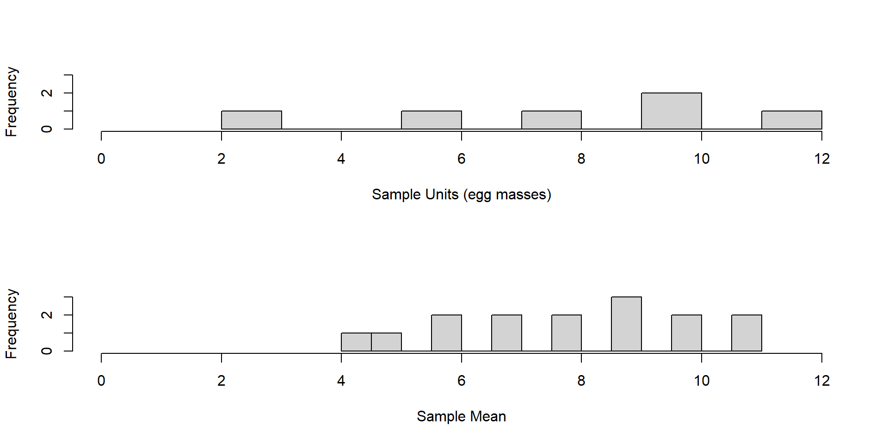
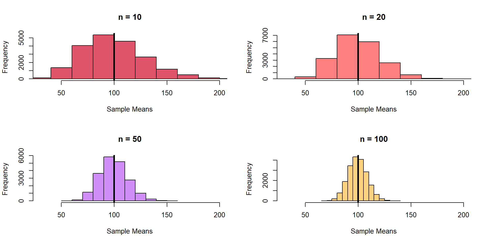

| Pond | egg.mass |
|---|---|
| A | 2 |
| B | 6 |
| C | 8 |
| D | 10 |
| E | 10 |
| F | 12 |
Simple Random Sampling
Goal
Goal: to know the mean number of boreal toad egg masses per pond in RMNP
- different egg masses per pond is meaningful why?

SRS Conceptual Walkthrough
We have a known population of ponds, N = 6
We have enough to money for n = 2
Will use SRS
SRS
Population Parameter: \(\mu = 8\)
How many possible unique samples are there (w/o replacement)
\[ {N}\choose{n} \]
\[ \frac{N!}{n!(N-n)!} \]
SRS
What is the probability of any one particular sample?
SRS: all samples have the same probability!
What is the probability pond “A” will be sampled”? Pond “B”?
SRS
| Sample.Number | First Pond | Second Pond | First Value | Second Value |
|---|---|---|---|---|
| 1 | A | B | 2 | 6 |
| 2 | A | C | 2 | 8 |
| 3 | A | D | 2 | 10 |
| 4 | A | E | 2 | 10 |
| 5 | A | F | 2 | 12 |
| 6 | B | C | 6 | 8 |
| 7 | B | D | 6 | 10 |
| 8 | B | E | 6 | 10 |
| 9 | B | F | 6 | 12 |
| 10 | C | D | 8 | 10 |
| 11 | C | E | 8 | 10 |
| 12 | C | F | 8 | 12 |
| 13 | D | E | 10 | 10 |
| 14 | D | F | 10 | 12 |
| 15 | E | F | 10 | 12 |
What is the probability pond “A” will be sampled”? Pond “B”?
SRS
Is it okay to not like your random sample and resample?
SRS
Consider the sample mean \(\hat{\mu}\) for each sample
| Sample.Number | First Pond | Second Pond | First Value | Second Value | Sample.Mean | Absolute.Deviation |
|---|---|---|---|---|---|---|
| 1 | A | B | 2 | 6 | 4 | 4 |
| 2 | A | C | 2 | 8 | 5 | 3 |
| 3 | A | D | 2 | 10 | 6 | 2 |
| 4 | A | E | 2 | 10 | 6 | 2 |
| 5 | A | F | 2 | 12 | 7 | 1 |
| 6 | B | C | 6 | 8 | 7 | 1 |
| 7 | B | D | 6 | 10 | 8 | 0 |
| 8 | B | E | 6 | 10 | 8 | 0 |
| 9 | B | F | 6 | 12 | 9 | 1 |
| 10 | C | D | 8 | 10 | 9 | 1 |
| 11 | C | E | 8 | 10 | 9 | 1 |
| 12 | C | F | 8 | 12 | 10 | 2 |
| 13 | D | E | 10 | 10 | 10 | 2 |
| 14 | D | F | 10 | 12 | 11 | 3 |
| 15 | E | F | 10 | 12 | 11 | 3 |
SRS
| Sample.Number | Sample.Mean | Deviance.Truth |
|---|---|---|
| 1 | 4 | -4 |
| 2 | 5 | -3 |
| 3 | 6 | -2 |
| 4 | 6 | -2 |
| 5 | 7 | -1 |
| 6 | 7 | -1 |
| 7 | 8 | 0 |
| 8 | 8 | 0 |
| 9 | 9 | 1 |
| 10 | 9 | 1 |
| 11 | 9 | 1 |
| 12 | 10 | 2 |
| 13 | 10 | 2 |
| 14 | 11 | 3 |
| 15 | 11 | 3 |
\[ \frac{1}{N}\times\sum_{i=1}^N (\hat{\mu}_{i}) = 8\]
\[\sum_{i=1}^N(\hat{\mu}_{i}-\mu) = 0 \]
Estimator Bias?
SRS
| Sample.Mean | Frequency | Relative.Freq | Mean.times.Rel.Freq |
|---|---|---|---|
| 4 | 1 | 0.067 | 0.267 |
| 5 | 1 | 0.067 | 0.333 |
| 6 | 2 | 0.133 | 0.800 |
| 7 | 2 | 0.133 | 0.933 |
| 8 | 2 | 0.133 | 1.067 |
| 9 | 3 | 0.200 | 1.800 |
| 10 | 2 | 0.133 | 1.333 |
| 11 | 2 | 0.133 | 1.467 |
| Sum | 15 | 1.000 | 8.000 |
\[ E[\mu] = \sum_{q=1}^{Q} p_i \times \hat{\mu}_{i} = 8 \]
\(Q\) = number of possible samples
\(p_i\) = probability of obtaining a given sample / relative frequency
SRS

Sampling Disribution
- Sample mean formula is an estimator of the population mean (parameter )
- Sample mean is a random variable with a sampling distribution
- sample mean varies from sample-to-sample becasue of the sampling process
- The sampling distribution is specific to an estimator - has known outcomes and relative frequencies of values
Sampling Disribution
- judge an estimator by its sampling distribution
- What properties do we want?
Estimator Properties
- Precise and unbiased estimator
- Is our estimator below precise?

Population Variance
The variance of all sample units
\[ \sigma^{2} = \frac{1}{N-1}\sum_{i=1}^{N} \left(y_{i}-\mu\right)^{2} \]
\[ \sigma^{2} = \frac{1}{6-1}\sum_{i=1}^{6} \left(y_{i}-8\right)^{2} \]
Sample Variance
Estimate population variance from each sample
\[ \hat{\sigma}^{2} = \frac{1}{n-1}\sum_{i=1}^{n} \left(y_{i}-\hat{\mu}\right)^{2} \]
Sample Variance

- Unbiased estimate of the population variance.
- Individual values will deviate from the population variance.
Variance of Sampling Distribution
| Sample.Number | Sample.Mean | Deviance.Truth |
|---|---|---|
| 1 | 4 | -4 |
| 2 | 5 | -3 |
| 3 | 6 | -2 |
| 4 | 6 | -2 |
| 5 | 7 | -1 |
| 6 | 7 | -1 |
| 7 | 8 | 0 |
| 8 | 8 | 0 |
| 9 | 9 | 1 |
| 10 | 9 | 1 |
| 11 | 9 | 1 |
| 12 | 10 | 2 |
| 13 | 10 | 2 |
| 14 | 11 | 3 |
| 15 | 11 | 3 |
- Population variance - variation among sample units; estimate from sample variance
- Var. Sampling Distribution - variance of mean values from each possible sample
Connect these two
Variance of all units vs variance of all sample means
Connect these two
- As the sample size (n) increases the sample variance declines by 1/n
- Finite-population correction factor
\[ \left(\frac{N-n}{N}\right) \]
Connect these two
- Sample size (n) = 2
- Total units (N) = 6
- E[pop var] = 12.8
- E[sample dist. var] = 4.3
- 1/n = 0.5
- Finite correction factor = 0.67
- E[pop var] \(\times\) 1/n \(\times\) CF = 4.3
Connect these two
Why does this matter?
Connect these two
If you know the E[pop var] …
- you have a mechanism to understand the variation of sample distribution of the means
- the more variation in \(y\), the more variation in sampling dist. of means.
The TOTAL
Extrapolate the sample to the total population
\[ \hat{\tau} = N \times \hat{\mu} = \frac{N}{n}\sum_{i=1}^{n}(y_i) \]
The TOTAL
The TOTAL
Variance of the total
\[ \text{var}(\hat{\tau}) = N\times(N-1) \times \frac{\hat{\sigma}^2}{n} \]
Probabilty of
Whenever you have the sampling distribution, frame precision in terms of what matters to you.
Probabilty of
\[ P(\hat{\tau}) \leq 2 \times \tau \]